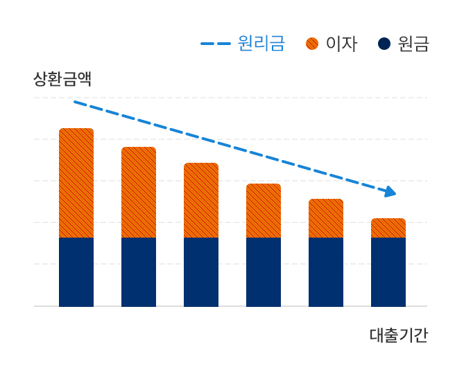
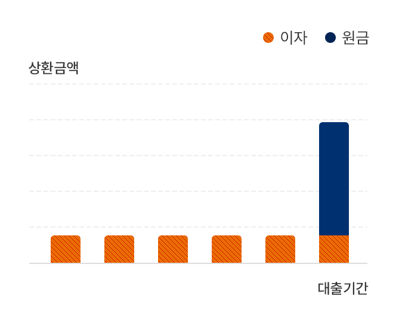

이 설명서는 금융소비자의 권익 보호 및 대출상품에 대한 이해 증진을 위하여
「금융소비자 보호에 관한 법률」 및 관련 규정에 의거, 보험회사의 내부 통제절차를 거쳐 대출상품의 주요 내용을 쉽게 이해할 수 있도록 작성한 자료입니다.
설명 내용을 제대로 이해하지 못하였음에도 불구하고 설명을 이해했다는 서명을 하거나 녹취기록을 남기시는 경우, 추후 해당 내용과 관련한 권리구제가 어려울 수 있습니다.
고객님께서는 상품 가입 前 아래 사항을 반드시 확인·숙지하여 주시기 바랍니다.
유사한 상품과의 구별되는 특징
- 신용대출은 고객님의 신용도를 기반으로 대출한도 및 금리가 정해지는 상품입니다. 이는 경제적 가치가 있는 자산을 담보로 설정한 후 대출이 실행되는 담보대출, 당사에 보유한 보험계약 해지환급금의 일정범위 내에서 대출이 지급되는 보험계약대출과 구분됩니다.
- 일반적으로 신용대출이 담보대출이나 보험계약대출보다 금리가 높은 경우가 많아 동일한 금액을 신용대출로 이용시 이자비용 부담이 커질 수 있습니다.
민원·상담이 빈번하여 숙지가 필요한 사항
-
Q1. 대출이용과 신용도는 어떤 관계가 있나요?
대출상품 이용 시, 대출계약의 체결만으로도 신용평점이 하락할 수 있으며, 신용평점 하락 시 대출 및 타사와의 금융거래 등의 이용에 불이익이 발생할 수 있습니다.
-
Q2. 대출금을 만기 전에 상환하고 싶은데 가능한가요?
대출금을 중도에 상환하는 경우 중도상환수수료가 부과될 수 있습니다. 중도상환수수료는 대출의 잔여일수 및 상환금액에 따라 달라지며, 중도상환 시 향후 원리금 상환 부담금액이 감소하게 됩니다.
-
Q3. 대출을 이용하기 위해서는 어떤 비용을 부담해야 하나요?
기본적으로 대출금과 이자에 대한 상환의무를 부담하시게 되며, 대출상품 및 금액에 따라 인지세 등 추가적인 비용을 부담하실 수 있습니다.
-
Q4. 대출기간 동안 대출이자율과 이자 납입금액은 어떻게 되나요?
고객님이 변동금리나 혼합금리 방식으로 계약을 체결하는 경우 대출 실행시 적용되는 이자율 뿐만 아니라, 그 이후의 변동여부와 변동폭을 가늠할 수 있는 기준금리 등을 기억하셔야 합니다.
금리변동 방식과 상환방법에 따라 향후 부담하셔야 하는 이자납입금액이 달라지므로 자세히 확인하셔야 합니다.
발생 가능한 불이익에 관한 사항
대출금 연체 시 대출원금에 대한 연체이자 납부, 연체정보 등록, 이에 따른 금융거래 제한 등의 불이익이 발생할 수 있습니다.
상세내용은 본 상품설명서의 [8. 원리금 납부 연체에 따른 불이익] 항목을 참고하시기 바랍니다.
(예시) 만기 이후 대출잔액 1.2억원을 1개월 연체한 경우 : 연체이자율(예 : 8%) 적용 시 연체이자 80만원 (1.2억원 × 8% × 1/12)을 납부하셔야 합니다.
민원·상담·분쟁조정 연락처
- 현대해상 인터넷 홈페이지(hi.co.kr) 또는 대표콜센터(1588-5656)로 문의하시기 바랍니다.
- 분쟁이 발생한 경우에는 금융감독원 e-금융민원센터(http://www.fcsc.kr) 또는 대표번호(국번없이 1332) 등에 도움을 요청하실 수 있습니다.
1. 상품개요 및 상품의 특성
- 상품명: 보험계약대출
- 적용금리: N.NN%
- 대출금액: 140,000원
- 금리적용방식: 고정
- 대출기간(또는 만기일): YYYY.MM.DD
- 중도상환수수료 부과 여부: 비대상
- 휴일대출상환 대상여부: 대상
- 대출상환방법: 원금균등분할
2. 수수료 등 비용부담
고객님께서 부담해야 하는 금액은 [대출금액과 이자, 아래의 수수료 등]을 합산한 총액이며, 정확한 금액은 대출심사 후에 확인 가능하므로 심사 후 회사 담당자의 안내를 받으시기 바랍니다.
인지세
인지세란 인지세법에 의해 대출약정 체결 시 납부하는 세금으로 대출금액에 따라 세액이 차등 적용되며, 고객과 보험회사가 각각 50%씩 부담합니다.
대출계약을 철회하는 경우
보험회사가 부담한 인지세는 「금융소비자 보호에 관한 법률」 제46조 및 관련 규정에서 정하는 바에 따라 채무자가 부담하여야 합니다.
3. 금융소비자의 권리
청약철회권
- 일반금융소비자는 ① 계약체결일 또는 ② 계약서류를 제공 받은 날, ③ 대출금 수령일 중 나중에 발생한 날로부터 14일 이내 계약에 대한 청약을 철회할 수 있습니다.(다만, 철회권을 행사하여 효력이 발생한 이후에는 이를 취소할 수 없습니다)
- 청약의 철회 의사를 표시하기 위해서는 서면, 전화 등으로 보험회사에 청약 철회의 의사표시를 해야 하며, 이미 수령한 대출금과 그에 대한 이자, 대출과 관련하여 보험회사가 제3자에게 부담한 인지세 등을 반환하여야 합니다.
- 대출계약 철회권을 행사한 경우에는 중도상환수수료가 면제되며, 5영업일 이내에 해당 대출과 관련한 대출정보가 삭제됩니다.
- 대출계약 철회권을 남용하여 해당 보험회사를 대상으로 최근 1개월 내에 2회 이상 대출계약을 철회하는 경우, 신규대출·만기연장 거절, 대출한도 축소, 금리우대 제한 등 불이익이 발생할 수 있습니다.
금리인하요구권
아래 주요 내용을 자필로 기재하여 주시기 바랍니다.
- 금리인하요구권이란 금융소비자가 본인의 신용상태가 개선되었다고 판단되는 경우(개인신용평점 상승·취업·승진·재산증가 등) 보험회사에 자신이 적용받는 금리인하를 요구할 수 있는 권리(「보험업법」 제110조의3)를 말합니다.
- 금리인하요구권은 영업점 방문 및 비대면채널(홈페이지 등)을 통해 신청 가능하며(신청시기·횟수제한 없음), 회사는 금리인하를 요구하는 고객에게 신용상태 개선을 확인하는데 필요한 자료를 제출하도록 요구할 수 있습니다.
- 신용상태의 개선이 경미하거나 신용상태가 금리에 영향을 미치지 않는 상품(정책자금대출·집단대출 등)에 대해 금리인하를 요구한 경우, 고객의 금리인하 요구는 수용되지 않을 수 있습니다.
- 보험회사는 금리인하 요구를 받은 날부터 10영업일 이내(고객에게 자료의 보완을 요구하는 날부터 자료가 제출되는 날까지의 기간은 포함되지 않습니다.)에 금리인하 요구 수용 여부 및 그 사유를 알려드립니다.
위법계약해지권
-
금융회사가 「금융소비자보호에 관한 법률」상 다음의 의무를 위반하여 대출계약을 체결한 경우,
금융소비자는 해당 계약을 위약금 등 수수료(이자 제외) 부담없이 해지할 수 있습니다.
- 적합하지 아니하다고 인정되는 대출계약의 체결을 권유한 경우(법 제17조제3항 위반)
- 대출상품이 적정하지 않은 경우에도 사실을 알리지 않거나 확인받지 않은 경우(법 제18조제2항 위반)
- 설명의무를 이행하지 않은 경우(법 제19조제1항·제3항 위반)
- 불공정영업행위를 한 경우(법 제20조제1항 위반)
- 부당권유행위를 한 경우(법 제21조 위반)
- 금융소비자는 위법계약해지권 행사를 위해 법 위반사실을 안 날로부터 1년 이내의 기간으로 계약체결일로부터 5년 이내에 계약해지요구서에 위반사실을 입증하는 서류를 첨부하여 계약의 해지를 요구하여야 합니다.
자료열람요구권
-
금융소비자는 분쟁조정 또는 소송의 수행 등 권리구제를 위한 목적으로 회사가 기록 및 유지·관리하는 다음의 자료에 대한 열람(사본 및 청취 포함)을 요구할 수 있습니다.
- 계약체결에 관한 자료, 계약의 이행에 관한 자료, 금융상품 등에 관한 광고 자료, 금융소비자의 권리행사에 관한 자료, 내부통제기준의 제정 및 운영 등에 관한 자료, 업무 위탁에 관한 자료
- 회사는 금융소비자의 분쟁조정 신청내역 또는 소송제기 등의 목적 및 열람의 범위가 기재된 열람요구서로 열람을 요구받은 날로부터 8일 이내에 금융소비자가 해당 자료를 열람할 수 있게 합니다.
- 회사는 법령, 제3자의 이익 침해, 영업비밀의 침해 등의 사유가 있는 경우 이를 금융소비자에게 알리고 자료 열람을 제한하거나 거절할 수 있습니다.
4. 대출이자율
대출금리 산정방식은 고정금리 방식입니다.
대출이자율
| 대출금리 적용방식 |
|
| 특징 |
대출 실행시 결정된 금리가 대출만기까지 동일하게 적용 |
| 장점 |
시장금리 상승기에 금리 인상 없음 |
| 단점 |
시장금리 하락기에 금리 인하 효과가 없어 변동금리보다 불리 |
대출금리 결정(변동)요인
- 대출금리는 보험회사의 자금조달금리에 각종 원가요소와 목표이익률(마진) 등을 반영하여 결정됩니다.
- 대출금리는 변동기준을 명확히 표시하기 위해 일반적으로 대출 기준금리와 가산금리의 합으로 표시됩니다.
- 대출 기준금리는 대출금리 결정 및 변동 시 기준이 되는 금리를 의미하며, 현대해상 장기보험신용대출은 '장기보험부채 조달금리'를 대출기준금리로 사용하고 있습니다.
-
가산금리는 보험회사가 대출취급에 따른 원가비용 등을 감안하여 대출 기준금리에 자율적으로 가산하는 금리를 말하며, 아래와 같이 구성됩니다.
- 리스크프리미엄: 보험회사의 실제 자금조달금리와 대출 기준금리 간의 차이 등
- 원가요소: 고객의 신용도·담보종류에 따른 예상 손실비용, 업무원가(인건비·전산처리비용), 세금(교육세 등) 및 준조세성 부담금(보증기관 출연료 등) 등
- 목표이익률: 보험회사가 설정하는 수익률
- 가감조정 전결금리: 부수거래 감면금리(고객의 보험료 납부실적 등을 기준으로 하는 할인금리), 전결 조정 금리 등
- 결정된 대출금리는 개별약정에 의해 별도로 정한 항목(변동금리대출의 기준금리, 거래실적에 따른 부수거래감면금리 등) 이외에는 대출만기일까지 동일하게 적용됩니다.
- 기한연장, 채무자변경 등 대출조건이 변경되는 경우에는 변경 시점의 원가요소와 마진 및 가감조정 전결금리에 따라 대출금리가 변경될 수 있습니다.
5. 대출 상환방법
상환방법별 특징
-
원금균등상환

- "대출원금을 매월 동일한 금액으로 갚아가는 방식"
- 남은 대출원금에 대해 이자가 계산되어, 매월 납입하시는 상환 금액이 낮아지게 됩니다.
- 원금을 바로 갚아나가는 즉시분할상환 방식이 있습니다.
-
만기일시상환

- "약정기간동안 대출원금에 대한 상환 없이 이자만 부담하는 방식"
- 만기일자에 대출원금을 모두 상환해야 하므로 상환 부담이 증가할 수 있습니다.
상환방법에 따른 상환금액·이자율·시기
- 동일한 금리·한도로 대출을 진행하더라도 상환방법에 따라 만기까지 부담해야하는 총 원리금 부담액이 달라질 수 있습니다.
상환방법별 원리금 부담액 예시(1천만원을 5% 이자율로 24개월간 대출한 경우)
-
원금균등상환을 선택한 경우
원금균등상환을 선택한 경우
| 상환방식 |
즉시 분할상환방식 |
총 원리금
부담 예상액 |
10,520,833원 |
월 원리금
상환 예상액 |
- 1회~24회: 458,333원~418,403원(점차 감소)
|
-
만기일시상환을 선택한 경우
만기일시상환을 선택한 경우
| 상환방식 |
만기 일시상환 |
총 원리금
부담 예상액 |
11,000,000원 |
월 원리금
상환 예상액 |
- 1회~23회: 41,666원(이자만 납부)
- 24회: 10,041,666원
|
상환방법별 원리금 상환 부담
- 만기 일시상환 방식의 상환부담: 만기일시상환 상품의 경우 대출 만기도래 시 원금을 한꺼번에 상환해야 하며, 만기연장이 되지 않을 수 있습니다.
만기 상환시 대출금 상환 방법
-
당사 인터넷 홈페이지, 모바일 어플리케이션, 입금전용계좌(가상계좌)를 통하여 편리하신 방법으로 상환하실 수 있습니다.
- 현대해상 홈페이지: www.hi.co.kr
- 현대해상 모바일앱: App store 또는 Play 스토어 다운로드
- 대출상담 콜센터: 1588-5655
- 대출만기일이 휴일인 경우에도 인터넷창구, 모바일 어플리케이션, 가상계좌를 통해 휴일 중에도 상환이 가능합니다.
(중도 상환의 경우에도 동일한 방식으로 처리가 가능합니다.)
- 만기상환 시 마지막 원금, 이자금액은 자동이체가 되지 않을 수 있으니 유의하시기 바랍니다.
6. 원리금 납부 연체에 따른 불이익
연체이자율
- 연체이자율은 [대출이자율 + 연체가산이자율 3%]로 적용하며, 최대 19%를 초과하지 않습니다.(여신거래기본약관 제2조 제5항 적용)
- 신용대출 연체기간에 따른 연체이자율 적용기준은 아래와 같습니다.
신용대출 연체기간에 따른 연체이자율 적용기준
| 연체기간 |
연체이자율 |
| 1개월 이내 |
납입 지연된 원리금 상환(예정)액에 대해 [적용이자율 + 3%] |
| 1개월 초과 |
총 대출잔액에 대해 [적용이자율 + 3%] |
연체이자(지연배상금)를 내셔야 하는 경우
-
① 「이자를 납입하기로 약정한 날」에 납입하지 아니한 때
- 이자를 납입하여야 할 날의 다음날부터 1개월까지는 내셔야 할 약정이자에 대해 연체이자가 적용되고, 1개월이 경과하면 기한의 이익을 상실하게 되므로 대출원금에 연체이율을 곱한 연체이자를 내셔야 합니다.
-
② 「원금을 상환하기로 약정한 날」에 상환하지 아니한 때
- 원금을 상환하여야 할 날의 다음날부터는 대출원금에 대한 연체이자를 내셔야 합니다.
-
③ 「분할상환금을 상환하기로 한 날」에 상환하지 아니한 때
- 분할상환금을 상환하여야할 날의 다음날부터는 해당 분할상환금에 대한 연체이자를, 2회 이상 연속하여 지체한 때에는 기한의 이익상실로 인하여 대출원금잔액에 대한 연체이자를 내셔야 합니다.
-
④ 기타 여신거래기본약관에서 정한 대출기한 전의 채무변제의무 사유에 해당되어 기한의 이익이 상실된 때
- 기한의 이익이 상실된 때에는 그 다음 날부터 대출원금에 대한 연체이자를 내셔야 합니다.
이자납입 연체로 인하여 연체이율이 적용되었을 경우, 일부연체이자를 납입하는 경우에도 연체이자 전액을 납입하기 전까지 대출잔액에 연체이자율이 적용됨을 유의하시기 바랍니다.
기한의 이익 상실로 만기 전에 채무를 상환해야 하는 경우
-
① 이자나 분할상환원리금을 일정기간 연체한 경우 (상기 ‘연체이자(지연배상금)를 내셔야 하는 경우’ 참조)
-
② 채무자인 고객 소유의 제예치금(채무자의 보험계약으로부터 발생하는 채권을 포함),
기타 회사에 대한 채권, 담보부동산에 법원이나 세무서 등으로부터 (가)압류명령 등이 있는 때 등
- 이 경우 보험회사로부터 별도 청구가 없더라도 모든(또는 해당) 대출금을 즉시 상환하셔야 합니다.
-
③ 보험회사에 대한 수개의 대출채무 중 대출기한이 도래되었거나 기한의 이익이 상실된 대출을 하나라도 상환하지 아니한 때 등
- 이 경우 보험회사가 정한 독촉·통지한 기간 경과시 모든(또는 해당) 대출금을 즉시 상환하셔야 합니다.
자세한 사항은 보험회사의 가계용 여신거래기본약관 제7조를 참조하시기 바랍니다.
그 밖의 불이익
- 대출 원리금을 5영업일 이상 연체한 경우 단기연체정보가 신용정보회사에 제공되어 금융거래 제한(신용카드 정지 등)을 받을 수 있고, 개인신용 점수 하락 및 이에 따른 금리상승 등 불이익이 발생할 수 있으며 단기연체정보 등록 후 대출 원리금을 변제하여 단기연체정보가 해제되어도 개인신용점수가 일정기간 회복되지 않을 수 있습니다.
-
대출 원리금을 3개월 이상 연체한 경우 그 3개월이 되는 날을 등록사유발생일로 하여, 그 때로부터 7영업일 이내에 「일반신용정보관리규약」에 따른 장기연체정보가 등록되어 금융거래제약 등 불이익을 받을 수 있습니다.
* 「일반신용정보관리규약」 개정으로 연체정보 등록 기준이 변경될 수 있으며, 이럴 경우 변경된 기준에 따라 연체정보가 등록됩니다.
- 장기연체정보가 등록된 후 연체금액을 상환하여 등록사유가 해제되는 경우에도 등록기간 및 금액에 따라 해당 기록이 최대 1년 동안 남아 있을 수 있어, 동 기록으로 인해 금융상의 불편(대출 신규 및 연장 제한, 신용점수 하락 등)이 초래될 수도 있음을 반드시 유의하시기 바랍니다.
계약기간 및 연장사항
계약기간이 너무 짧을 경우, 대출금 상환을 위한 준비기간이 충분하지 않을 수 있으며, 너무 길면 불필요한 이자비용 및 중도상환 시 수수료 등을 추가로 부담하게 될 수 있습니다.
계약기간 연장에 관한 사항
- 신용점수가 하락하거나 연체 등이 발생하는 경우, 대출계약 연장이 거절될 수 있습니다.
- 일정한 자격을 갖춘 고객을 대상으로 한 대출(공무원대출 등 기타 협약대출 등)의 경우 자격이 유지되는 경우에만 기한이 연장될 수 있습니다.
대출계약이 신용에 미치는 영향
- 개인(신용)정보 조회는 고객님의 개인신용평점에 영향을 주지 않습니다.
(단, 고객님의 개인신용평점이 없는 경우에는 개인신용평점에 영향이 있을 수 있습니다.)
- 대출계약의 체결 사실만으로도 개인신용평점이 하락할 수 있으며, 대출계약이 변제 혹은 이에 준하는 방식으로 거래가 종료된 경우에도 일정기간 개인신용평점의 산정에 영향을 줄 수 있습니다.
- 평균적으로 연체율이 높은 금융권역·형태의 신용공여는 일반적인 신용공여보다 신용점수가 더 큰 폭으로 하락할 수 있습니다.
- 개인신용평점 하락 시 대출 및 신용카드 상품 등의 이용에 불이익이 발생할 수 있습니다.
기타 유의사항
이자 납입방법
- 고객님께서는 이자 납입일을 정하여 일정주기(매월)마다 이자를 납입하여야 합니다.
- 이자 납입방법이 자동이체인 경우, 이자 납입일(분할상환을 선택한 경우 대출원리금 등의 납입일)에 잔고 부족 등의 이체불가 사유로 납입금액 전부를 이체할 수 없는 경우에는 납입지정일 이후 보험회사가 정한는 출금일에 미납금액(지연배상금 포함)을 출금하여 대출원리금을 충당할 수 있습니다.
보험회사는 고객님의 정확한 상환능력을 추론하기 위하여 DSR(총부채원리금상환비율)을 산출하여 심사에 활용할 수 있으며, 연소득 대비 연원리금 상환비율이 높은 경우 심사가 거절될 수 있습니다.
계약체결 전 중요사항 안내여부 확인
아래 주요내용을 확인해 주시기 바랍니다.
- ① 대출계약의 체결만으로도 고객님의 신용평점이 하락할 수 있습니다.
- ② 대출금 연체 시 대출원금에 대하여 연체이자율이 적용되며, 연체이자를 일부 납입하는 경우에도 연체이자 전액을 상환하기 전까지 대출잔액에 연체이자율이 적용됩니다.
- ③ 대출금 연체 등으로 연체정보가 등록되는 경우 대출 및 신용카드 상품 등의 이용에 불이익이 발생할 수 있습니다. 연체금액을 상환하여 등록사유가 해제되는 경우에도 등록기간 및 금액에 따라 해제기록이 남아 있을 수 있습니다.
아래 내용을 확인해보시고 설명을 이해했다면 확인 서명을 기재하여 주시기 바랍니다.
- 본인은 현대해상화재보험㈜과의 대출거래를 함에 있어 권유 보험회사 직원 또는 모집인과 상담하여 위에서 설명한 내용을 포함하여 대출거래의 주요내용 및 고객부담비용에 대하여 충분히 설명을 듣고 이해하였음을 확인합니다.
- 본인은 현대해상화재보험㈜의 권유 직원 또는 모집인으로부터 금융소비자의 권리에 대하여 충분히 설명을 듣고 이해하였음을 확인합니다.
- 상기 설명사항을 제대로 이해하지 못한 상태에서 설명을 이해했다는 서명을 하거나 녹취기록을 남기시는 경우, 추후 해당 내용과 관련한 권리구제가 어려울 수 있습니다.
YYYY년 MM월 DD일
작성인 성명: 하*현
- 금융소비자는 상품가입 후 불만(민원)이 있을 경우 당사 고객센터(1588-5655) 또는 인터넷 홈페이지(http://www.hi.co.kr)에 문의할 수 있고, 분쟁이 발생한 경우에는 금융감독원 e-금융민원센터(http://www.fcsc.kr) 또는 대표번호(국번없이 1332) 등에 도움을 요청할 수 있습니다.
본 서류는 「금융소비자보호에 관한 법률」및 현대해상 내부통제 기준에 따른 절차를 거쳐 제공됩니다.